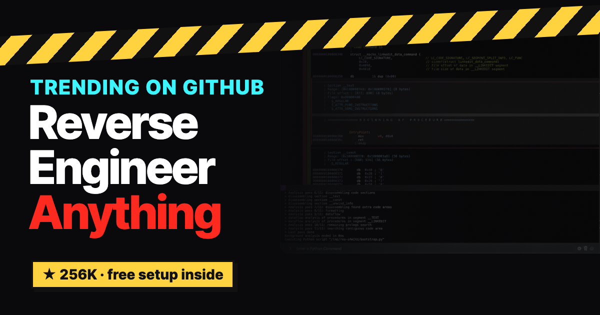
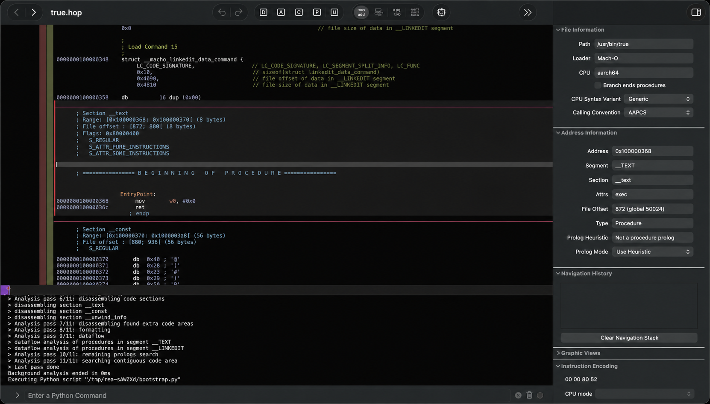

From the reel · Reverse Engineer Anything
See a feature you love. Find out how it works.
REA (Reverse Engineer Anything) gives Claude Code, Codex and other AI agents the tools to look inside an app, trace the code behind one feature, show you the evidence, and then help you build your own version.

Not guessing.
Evidence.
When you ask an AI "how does this app do that?", it usually guesses. REA changes that. It adds a set of reverse-engineering tools to your agent through MCP, so the agent can actually inspect the program: JavaScript and Electron apps, Android apps, games and native binaries, down to the machine code your computer runs.
What comes back is evidence: which files, functions and messages make the feature work. REA does not hand you an app's original source code. It gives your agent enough proof to explain the feature and help you build an independent version for your own project.
How it works
Three steps.
Ask about one feature
Name the app and the one thing you want to understand: search, copy, a shortcut.
The agent inspects the program
REA returns code, references and runtime observations as evidence.
Explain it, then build your own
Your agent uses the findings to explain the feature and help you write a clean version.
Setup
One command, then one prompt.
Add REA to your agent
Needs Node.js and npm. Pick your agents (Claude Code, Codex, Cursor, Gemini CLI and more), review the changes, approve, then restart your agent.
npx rea-agents setup
Only install from morluto/rea, rea.tools or the rea-agents npm package. The project warns that look-alike copies exist.
The prompt to paste
Replace the app and the feature with your own.
Use REA to understand how [the feature] works in [an app I own or am allowed to inspect]. Show me the evidence for each step, explain it in simple terms, then help me build a similar feature for my own project.
Real examples
What it has actually done.

How Notion copies text and HTML
REA traced a clipboard call from Notion's page API, through the preload and main process, to Electron's clipboard writer. Read the case study.
Rebuilding DX-Ball
Turning the 1996 Windows game into maintainable C: 55 functions rebuilt and 45,380 comparisons against the original. Read the case study.
Use it the right way
Three rules.
Only apps you can inspect
Use REA on software you own or have permission to analyse, and follow each app's license and terms.
Learn, then write your own
Use the evidence to understand an idea and build an independent version. Don't copy someone else's code or assets.
Official downloads only
Install from the official repo, site or npm package listed above.
Came here from the Reel?
Here is your DECODE link.
You commented DECODE for this page. Run the setup command, pick one feature you've always wondered about in an app you own, and paste the prompt.